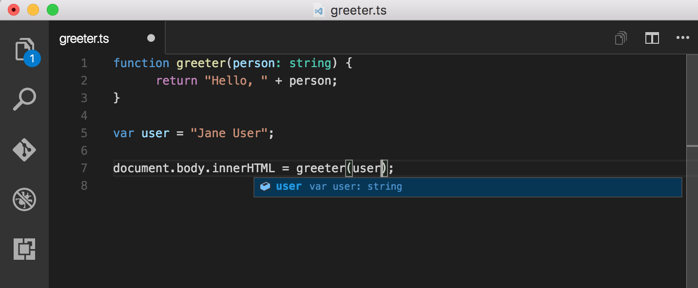

Angular Landscape
Angular
One framework
Mobile and desktop.
Highlights
Cross Platform
Speed & Performance
Tooling
Cross Platform
Progressive Web Apps
Deliver app-like experiences
High performance, offline and zero-step installation
Cross Platform
Native
Ionic Framework
NativeScript
React Native
Speed & Performance
Code generation
Converts templates into code
Speed & Performance
Universal
You can server the first view of the app in just HTML and CSS
Near instant rendering
Productivity
Templates
Simple and powerful template syntax
Productivity
Angular CLI
Add components and test
Productivity
IDEs
Intelligent code completion
Learn more
Documentation
Books
Podcasts
TypeScript
TypeScript is a typed superset of JavaScript that compiles to plain JavaScript
Any browser. Any host. Any OS. Open Source
Starts and ends with JavaScript
Use existing JavaScript code
Incorporate popular JavaScript libraries
Call TypeScript code from JavaScript
TypeScript compiles to clean, simple JavaScript code
String tools for large apps
Use highly-productive development tools
Leverage static checking and code refactoring
Types are optional
Type inference allows static verification of code
State of the art JavaScript
Supports the latest JavaScript features
Current: ECMAScript 2015
Future: async functions and decorators
Are compiled into simple JavaScript that targets ECMAScript 3 environments
Install
node.js
// install
npm install -g typescript
// compile
tsc helloworld.ts
IDEs/Editors
Quickstart
Install
npm install -g typescript
Quickstart
greeter.js
function greeter(person) {
return "Hello, " + person;
}
var user = "Jane User";
document.body.innerHTML = greeter(user);
Quickstart
greeter.html
<!DOCTYPE html>
<html>
<head><title>TypeScript Greeter</title></head>
<body>
<script src="greeter.js"></script>
</body>
</html>
Quickstart
Compile
tsc greeter.ts
Quickstart
Type annotations
function greeter(person: string) {
return "Hello, " + person;
}
var user = "Jane User";
document.body.innerHTML = greeter(user);
Compiles cleanly and lets the IDE suggest completions
Quickstart
Type annotations
Quickstart
Type annotations
function greeter(person: string) {
return "Hello, " + person;
}
var user = [0, 1, 2];
document.body.innerHTML = greeter(user);
Compiler will show an error
greeter.ts(7,26): Supplied parameters do not match any signature of call target
Quickstart
Inheritance
class Student {
fullName: string;
constructor(public firstName, public middleInitial, public lastName) {
this.fullName = firstName + " " + middleInitial + " " + lastName;
}
}
interface Person {
firstName: string;
lastName: string;
}
function greeter(person : Person) {
return "Hello, " + person.firstName + " " + person.lastName;
}
var user = new Student("Jane", "M.", "User");
document.body.innerHTML = greeter(user);
Routing
Angular Component Router enables navigation from one view to the next
Can interpret a browser URL as an instruction to navigate to a given view
Can pass parameters to help decide what specific content to present
Can bind to links on the page and it will navigate to the appropriate view when they are clicked
Learn more
Components
Components are the main way to build and specify elements and logic on the page
Combines directives, controllers and scope from Angular 1
Example Component
import { Component } from '@angular/core';
@Component({
selector: 'my-component',
template: 'I am {{name}}. '
})
export class MyComponent {
constructor() {
this.name = 'Miguel'
}
logName() {
console.log('Regards ', this.name)
}
}
Learn more
Augury
A Google Chrome Dev Tools extension for debugging Angular 2 applications

Angular Material
Material Design components for Angular 2 apps
Features
Comprehensive, modern UI components that work across web, mobile and desktop
Fast and consistent. Tested on IE11, Chrome, Edge, Firefox and Safari
Themable, accessible and internationalized
Integrates seamlessly with Angular 2
Kara Ericson's ng-conf 2016 live coding session
Progressive Webapps
A Progressive Web App uses modern web capabilities to deliver an app-like user experience
Angular 2 and Progressive Web Apps - Google I/O 2016
Electron
Build cross platform desktop apps
with JavaScript, HTML, and CSS
Features
Uses Chromium and Node.js
Automatic updates
Native menus & notifications
Windows installers
Apps built on Electron
Atom
Slack
Visual Studio Code
Atom
Learn more
Ionic
Open source mobile SDK for developing native and progressive web apps
Features
Performance
Virtual DOM rendering
Hardware accelerated transitions
Touch optimized gestures
Features
Angular
Builds on top of Angular
Features
Native
Runs inside Cordova or Phonegap
Deploys natively or as a Progressive Web App
Learn more
Slides
Thank you!
Miguel Cobá

This work is licensed under a Creative Commons Attribution-ShareAlike 4.0 International License.